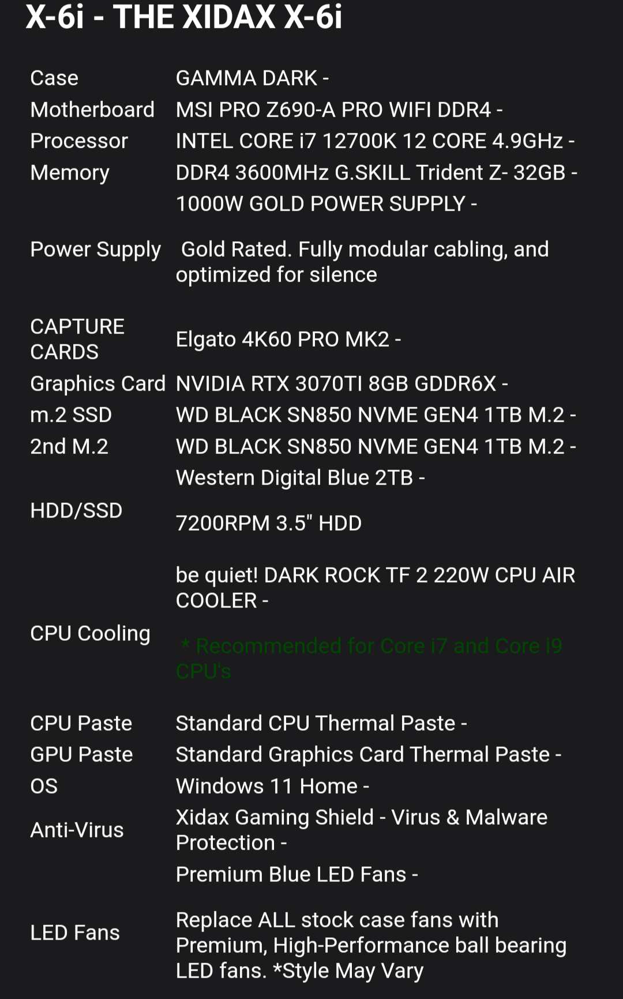

Like the title says, I kind of want to build a PC to use for gaming and working. Back when I was just getting to know video games, I had a good time playing on my phone, on my iPad, consoles, whether it was a friend's or my own, and on school computers or my old computer. The games worked fine, but today, while I'm still okay with playing on said devices, there are a few issues here and there. Maybe sometimes the device can't run a certain game, or the game just isn't available on that platform. Whatever the case, these days, if you think about gaming, you maybe think about the cool and very expensive gaming rigs that the big YouTube or Twitch celebrities have. The setups that have like 3 monitors, a giant PC tower on the ground, lit up in every color of the rainbow.
Friend's PC specs (Thanks Steven)
If I had one of those, that would be awesome, but again, they would be pretty expensive and definitely not in the price spectrum of a young college student. I don't have an urgent need for a new and shiny PC build right this minute, but I plan to have my own some time in the future. Right now, I have a perfectly good laptop that I'm using, recommended to me by a friend. I use it for basically everything nowadays and it works great. There are ups and downs, but I'm happy with what I've got.
In the future, I do definitely plan to build a PC for myself. Except for the fact that I know nothing about building a PC. Luckily for me though, I've got the pool of knowledge known as my friends and the internet. While I don't have exact parts in mind, I have some idea of what I want my PC to be able to do.
First up, I'm definitely getting multiple monitors. There have been endless moments whenever I'm doing anything on my laptop and I don't have the space to fit 5 different windows and tabs all at once. Since this PC would be my main workstation, I would prefer to have a good amount of storage, since I definitely see myself downloading too many things. I'd also use it for gaming, so a decent processor and graphics card are also needed. Those are the main things, but I'll also things like a keyboard, mouse, headphones, and all the equipment to customize the PC to my preferences.